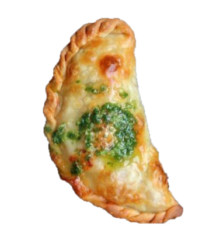
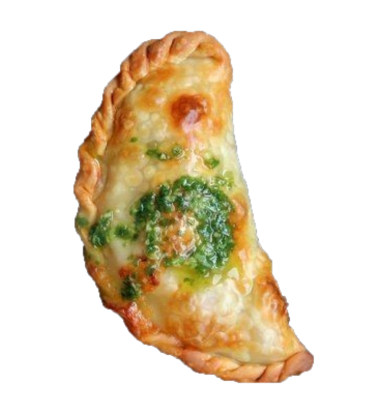

Argentina


 



Empanadas Argentinas
Igual que los guisos españoles o las pizzas italianas, la empanada encontró en el país su mejor versión
(en este
punto no se admite
controversia posible), y si bien cada provincia o región tiene su receta que promociona como la mejor,
en algo hemos
encontrado consenso. Amamos a la empanada argentina.